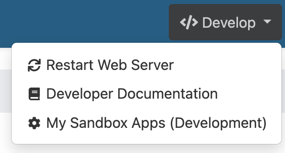
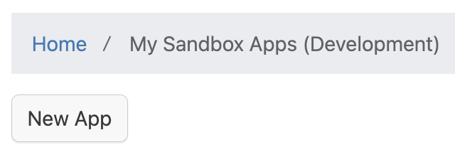
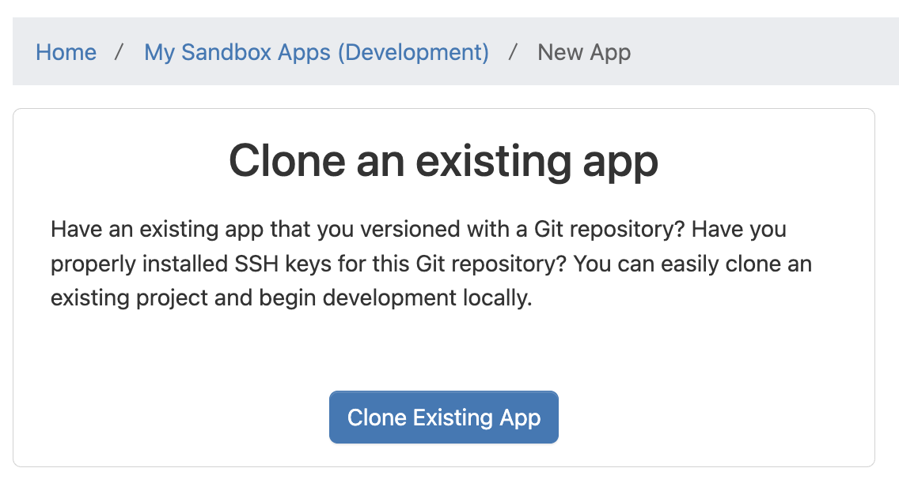
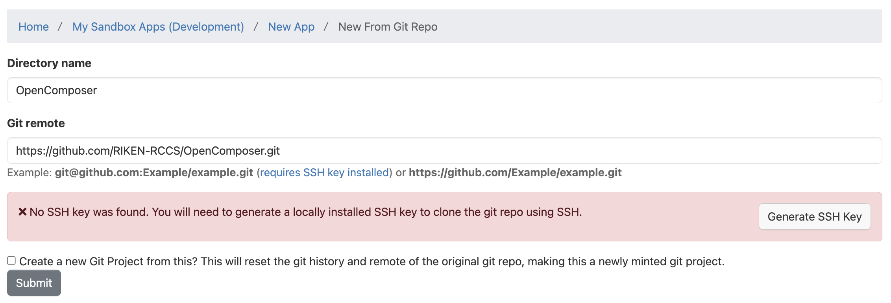
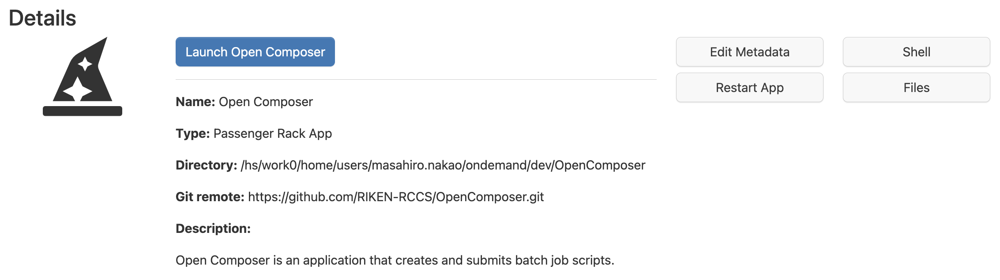

1. インストール
Open ComposerはOpen OnDemand上で動作します。Open OnDemandのアプリケーションディレクトリ/var/www/ood/apps/sys/にOpen Composerを保存してください。
# cd /var/www/ood/apps/sys/ # git clone https://github.com/RIKEN-RCCS/OpenComposer.git
2. 設定
2.1. 概要
./conf.yml.erb.sampleを参考にして./conf.yml.erbを作成してください。
# cd OpenComposer # cp conf.yml.erb.sample conf.yml.erb
| 項目名 | 設定内容 |
|---|---|
| apps_dir | アプリケーションのディレクトリ |
| scheduler | 利用するスケジューラ（slurm、pbspro、sge、fujitsu_tcs） |
| cluster | クラスタの定義 |
| data_dir | 投入したジョブの情報の保存先（デフォルトは${HOME}/composer） |
| login_node | Open OnDemandのWebターミナルを起動した際のログイン先 |
| ssh_wrapper | SSHを用いて他のノードのジョブスケジューラを用いる場合のコマンド |
| bin | ジョブスケジューラのコマンドのパス |
| bin_overrides | ジョブスケジューラの各コマンドのパス |
| sge_root | Grid Engineのルート用ディレクトリ（SGE_ROOT） |
| footer | フッタに記載する文字 |
| thumbnail_width | ホームページの各アプリケーションのサムネイルの横幅 |
| navbar_color | ナビゲーションバーの色 |
| dropdown_color | ドロップダウンメニューの色 |
| footer_color | フッタの色 |
| category_color | ホームページのカテゴリの背景色 |
| description_color | アプリケーションページのアプリケーション説明の背景色 |
| form_color | アプリケーションページのテキストエリアの背景色 |
apps_dirは必須です。schedulerもしくはclusterのどちらか1つも必須です。
2.2. bin_overridesの設定（省略可能）
ジョブスケジューラがslurmの場合は、sbatch、scontrol、scancel、sacctを設定できます。
bin_overrides: sbatch: "/usr/local/bin/sbatch" scontrol: "/usr/local/bin/scontrol" scancel: "/usr/local/bin/scancel" sacct: "/usr/local/bin/sacct"
ジョブスケジューラがpbsproの場合は、qsub、qstat、qdelを設定できます。
bin_overrides: qsub: "/usr/local/bin/qsub" qstat: "/usr/local/bin/qstat" qdel: "/usr/local/bin/qdel"
ジョブスケジューラがsgeの場合は、qsub、qstat、qdel、qacctを設定できます。
bin_overrides: qsub: "/usr/local/bin/qsub" qstat: "/usr/local/bin/qstat" qdel: "/usr/local/bin/qdel" qacct: "/usr/local/bin/qacct"
ジョブスケジューラがfujitsu_tcsの場合は、pjsub、pjstat、pjdelを設定できます。
bin_overrides: pjsub: "/usr/local/bin/pjsub" pjstat: "/usr/local/bin/pjstat" pjdel: "/usr/local/bin/pjdel"
2.3. clusterの設定（省略可能）
複数のジョブスケジューラを用いる場合に設定します。nameとschedulerは必須で、それぞれクラスタの名前とスケジューラを設定します。また、他のスケジューラに関する設定（bin、bin_overrides、sge_root）も可能です。注意点として、clusterを設定する場合は、clusterの外部でscheduler、bin、bin_overrides、sge_rootを設定することはできません。
cluster:
- name: "fugaku"
scheduler: "fujitsu_tcs"
- name: "prepost"
scheduler: "slurm"
bin_overrides:
sbatch: "/usr/local/bin/sbatch"
3. Open OnDemandへの登録
3.1. 管理者による登録
Open Composerを/var/www/ood/apps/sys/に保存すると、Open OnDemandのホームページにOpen Composerのアイコンが表示されます。Open Composerのアイコンが表示されない場合は、Open OnDemand用の設定ファイル./manifest.ymlを確認してください。
Open Composer上のアプリケーションをOpen OnDemandのホームページに表示することもできます。例えば、./sample_apps/Slurm/というアプリケーションを表示させたい場合は、同名のディレクトリをOpen OnDemandのアプリケーションディレクトリに作成します（# mkdir /var/www/ood/apps/sys/Slurm）。そして、そのディレクトリ内に下記のようなOpen OnDemand用の設定ファイルmanifest.ymlを作成します。
# /var/www/ood/apps/sys/Slurm/manifest.yml --- name: Slurm url: https://example.net/pun/sys/OpenComposer/Slurm
3.2. 一般ユーザによる登録
一般ユーザ権限でOpen Composerをインストールすることもできます。ただし、事前に管理者権限でOpen OnDemandのApp Developmentの機能を有効化する必要があります。
ナビゲーションバーの「</> Develop」の「My Sandbox Apps (Development)」を選択します（Webブラウザのウィンドウサイズが小さい場合は、「</> Develop」ではなく「</>」と表示されます）。
「New App」をクリックします。
「Clone Existing App」をクリックします。
「Directory name」に任意の名前（ここではOpenComposer）、「Git remote」に「https://github.com/RIKEN-RCCS/OpenComposer.git」を記入し、「Submit」をクリックします。
「Launch Open Composer」をクリックします。
